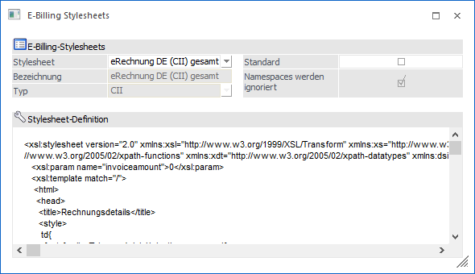
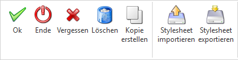
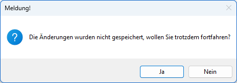

Im Menüpunkt…
1 WinLine FIBU / FAKT
1 Stammdaten
1 Belegaustausch
1 E-Rechnung - Stylesheets
…können Stylesheets von z. B. eInvoicing-Formaten wie "ZUGFeRD/Factur-x", "XRechnung", EBInvoice,… verwaltet werden. Ein Stylesheet übernimmt dabei die Aufgabe eine für den Menschen schwer lesbare XML-Datei leserlich zu visualisieren. Dafür wird die XML-Datei eines entsprechenden Formates von XML in HTML übersetzt.
Die XML-Datei und das Stylesheet bleiben voneinander unabhängig, so dass es unterschiedliche oder mehrere Darstellungsvarianten für ein XML-Format geben kann. Somit können auch eigene Stylesheets für die Visualisierung verwendet werden.

Ø Stylesheet
Hier kann ein bestehendes Stylesheet ausgewählt oder eine Neuanlage vorgenommen werden.
Ø Bezeichnung
Hier wird die Bezeichnung des Stylesheets angezeigt. Die Eingabe einer Bezeichnung steht nur bei Neuanlagen zur Verfügung.
Ø Typ
An dieser Stelle stehen die Typen bzw. XML-Formate/Syntaxen. Derzeit stehen die Einträge CII (CrossIndustryInvoice), UBL (Universal Business Language), EBInvoice und "Sonstige" zur Auswahl. Hier kann festgelegt werden, für welche E-Rechnungs-Typen das Stylesheet verwendet werden soll.
Ø Standard
Mit dieser Option kann für jeden Typ ein Standard-Stylesheet definiert werden, welches beim Import eines E-Belegs für die Visualisierung der XML-Datei als Stanadad herangezogen wird. Für den Typ "Sonstige" können beliebig viele Standard-Stylesheets festgelegt werden.
Hinweis
Im E-Billing Schema kann im Importbereich ein Stylesheet vorbelegt werden. Somit würde das Stylesheet aus dem Schema als Standard-Stylesheet greifen und nicht das hier definierte. Während des Importvorgangs kann aber jederzeit zwischen den Stylesheets für den entsprechenden Typ hin- und hergewechselt werden.
Ø Namespaces werden ignoriert
Mit dieser Option kann festgelegt werden, ob im XSLT (also im programmierten Stylesheet) Namespaces aus der XML-Datei verwendet wurden und diese daher bei der Anzeige mit jenen in der XML-Datei übereinstimmen müssen.
Wenn die Checkbox gesetzt ist, bedeutet das hingegen, dass im XSLT keine Namespaces verwendet werden. Dann werden auch aus der XML für die Anzeige die Namespaces entfernt (wie auch für die ausgelieferten
Vorlagen der Fall).
Hinweis
Für die ausgelieferten Standard-Stylesheets ist lediglich die Option der Standard-Checkbox editierbar, alles Weitere kann nicht geändert werden.
Ø Stylesheet-Definition
Der Inhalt des Stylesheets wird an dieser Stelle in einem statischen Formular dargestellt. Die Bearbeitung ist an dieser Stelle nicht möglich, sondern dient als reine Vorschau.
Hinweis
Ein neues oder angepasstes Stylesheet kann über den "Importieren"-Button von der Festplatte eingelesen werden. Analog dazu kann ein Stylesheet mit dem "Exportieren"-Button für eine Anpassung lokal abgespeichert werden und dort mit Hilfe eines Editors bearbeitet werden. Für die ausgelieferten Standard-Stylesheets steht der Import nicht zur Verfügung, d.h. die Standard-Stylesheets können nicht verändert werden.
Buttons

Ø OK
Durch Anklicken des OK-Buttons werden vorgenommene Änderungen gespeichert.
Hinweis
Beim Speichern wird geprüft, ob eine Bezeichnung eingetragen, ein Typ ausgewählt wurde und ob eine Stylesheet-Definition vorhanden ist. Für bestehende Stylesheets wird an dieser Stelle gefragt, ob überschrieben werden soll. Wenn die Option "Standard" gesetzt ist, wird geprüft, ob es für den Typ bereits eine Standard-Vorlage gibt. Wenn dies der Fall ist wird gefragt, ob dies geändert werden soll
und die Option bei der vorherigen Standard-Vorlage entsprechend zurückgesetzt. Ausnahme ist der Typ "Sonstige", hier können mehrere Standard-Vorlagen definiert werden. Tritt beim Speichern ein Fehler auf, wird mit einer Fehlermeldung abgebrochen.
Ø Ende
Durch Anklicken des ENDE-Buttons wird das Fenster geschlossen.
Ø Vergessen
Die Änderungen werden verworfen und nicht gespeichert. Es wird vorher eine Hinweismeldung ausgegeben, dass die Änderungen noch nicht gespeichert wurden. Erst bei Bestätigung mit "Ja" werden diese tatsächlich verworfen.

Ø Löschen
Durch Anklicken des Buttons wird das Stylesheet gelöscht. Die Standard-Stylesheets können nicht gelöscht werden.
Ø Kopie erstellen
Es kann eine Kopie des ausgewählten Stylesheets erzeugt werden, welches in weiterer Folge bearbeitet werden kann (Ex- und Import).
Ø Stylesheet importieren
Ein neues oder angepasstes Stylesheet kann von der Festplatte eingelesen werden.
Hinweis
Für die ausgelieferten Standard-Stylesheets steht der Import nicht zur Verfügung, d.h. die Standard-Stylesheets können nicht überschrieben werden.
Ø Stylesheet exportieren
Sollen Anpassungen an einem Stylesheet vorgenommen werden, kann ein bestehendes Stylesheet lokal abgespeichert werden und dort mit Hilfe eines Editors per XSLT-Programmierung bearbeitet werden. Anschließend kann dieses wieder importiert werden.
Hinweis
XSLT (Extensible Stylesheet Language Transformations) ist eine Programmiersprache die verwendet wird, um XML-Dateien in andere Formate, wie z.B. HTML, zu transformieren